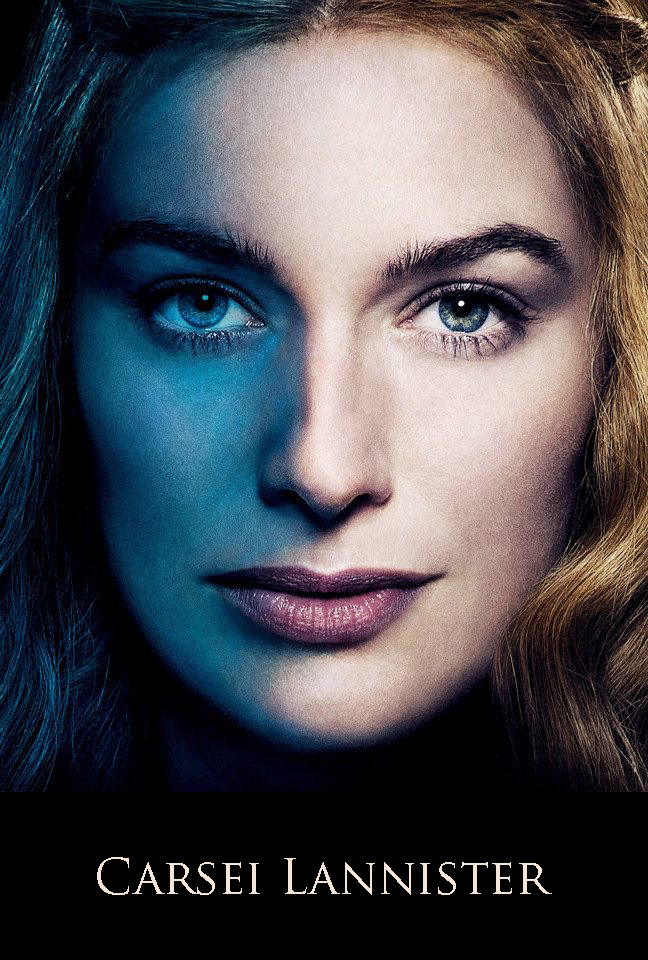

|

|
Cersei Lannister
Cersei Lannister is the eldest child of Tywin and Joanna Lannister by mere moments, and the twin sister of Jaime Lannister. After Robert's Rebellion she married the new king, Robert Baratheon, and became Queen of the Seven Kingdoms; she is the mother of Joffrey, Myrcella, and Tommen Baratheon. She becomes a POV Character in A Feast for Crows. In the TV series she is played by Lena Headey.
Character and Appearance
Cersei is willful, ambitious and has a certain low cunning. She is, in her opinion, politically astute and likes to think of herself as her father's daughter, and feels slighted when people do not jump to her erratic commands. She resents the customs and conventions put on her because of her gender, but never realizes that people do not come to her or respect her commands because she is an ineffectual leader.[2]
Early in the series, Cersei displays some real cunning in handling the political turmoil and intrigues surrounding the death of King Robert and the outbreak of the War of the Five Kings. As the series progresses, however, the more power Cersei obtains, the more she proves herself to be incompetent at handling it; although she has spent most of her life scheming to gain power, she seems to have little idea of what to do with it once she has it.
Her quick temper and her easily wounded pride frequently lead her to make rash decisions, and she rarely considers what unintended consequences her actions might have. She lacks the patience for dealing with the tedious yet vital details of administration, and increasingly tends to avoid facing unpleasant facts, surrounding herself with sycophants rather than honest and competent advisers; ironically, despite her contempt for Robert's hedonistic lifestyle and physical deterioration, she is unconsciously coming to mimic his habit of overindulging in food, alcohol and sex as distractions from the pressures of leadership. Although she shares her father's philosophy of ruling through fear rather than love, she lacks his ability to temper ruthlessness with caution, pragmatism, and sound, objective judgment.
Cersei's feelings toward her father are complex; she resents him for marrying her off to Robert Baratheon and for never granting her as much power and respect as she craved, but also admires and seeks to emulate his brutal effectiveness as a politician. She has loathed her younger brother Tyrion ever since his birth killed their mother. Although once optimistic about her royal marriage to Robert Baratheon, she quickly grew to despise him as a drunken fool who remained too infatuated with the memory of Lyanna Stark to give her a second glance.
The only people she can truly be said to love are her twin brother Jaime, with whom she has carried on an incestuous relationship since their adolescence, and her children (all of whom carry the surname Baratheon, but were in fact fathered by Jaime). However, she seems to love Jaime and the children more as extensions of herself than anything else, and can turn on them suddenly: while she protects her children fiercely from any others who would harm them, she provides them with little in the way of sound guidance or consistent discipline, and can react abusively when they defy or disappoint her.
Cersei is a strikingly beautiful woman with classic Lannister looks: blonde hair, brilliant green eyes, fair skin, and a slender, graceful figure. this collection of images.However, time and motherhood are beginning to take their toll on her body, and as of A Feast for Crows she has begun to gain weight as a result of alcohol abuse. Like many other characters in the series, she occasionally has dreams that seem to be prophetic.
History
Cersei is technically her parents' oldest child, although her twin Jaime was born mere moments later, clutching her heel. The twins were nine years old when their brother Tyrion was born, killing their mother and causing their father to become cold and bitter.
Cersei has been haunted since childhood by a prophecy made by a wise woman, Maggy the Frog, who was reputed to have magical powers. The woman correctly predicted Cersei's marriage and mutual infidelity with a king. She went on to prophesy that Cersei would outlive all her children, who would die as kings and queens, and that after everything she had was taken away by a younger and more beautiful queen, the valonqar (High Valyrian for “little brother”) would come to end her life. Young Cersei was so terrified by this prophecy that she murdered her close friend Melara Hetherspoon, who had been present, shortly afterward to prevent her from speaking of it. She has always identified the valonqar as Tyrion, and eventually comes to worry that Margaery Tyrell might be the younger and more beautiful queen.[3]
When Cersei was a girl, her father promised her that she would marry Prince Rhaegar and would one day become queen. She was delighted by this news and became infatuated with Rhaegar upon their first meeting. However, King Aerys rebuffed Tywin's offer, later marrying Rhaegar to Elia Martell.
Cersei and Jaime experimented sexually with one another during childhood. At one point they were discovered by a servant, and their mother moved their rooms to separate sides of the castle in an attempt to prevent such behavior.[4] At the age of twelve, Cersei was taken to King's Landing with her father, then Hand of the King. In the following years, Lord Tywin refused every offer of marriage for Cersei he received, probably still hoping for a match with one of the Targaryen princes. She missed Jaime and was jealous when Lord Tywin eventually proposed to marry him to Lysa Tully. Jaime was knighted at the age of fifteen during the campaign against the Kingswood Brotherhood and, on his way home to Casterly Rock, he visited King's Landing, mainly to see his sister. Cersei seduced him during the visit and persuaded him to join the Kingsguard, which would require him to remain unmarried and live near her in King's Landing. She expected that Lord Tywin would be strictly opposed to the idea, but that he would not dare to openly object to it in order not to offend King Aerys.[5]
Cersei orchestrated the arrangements behind the scenes over the course of the next month, but, although she was successful in securing Jaime's place in the Kingsguard, her plan backfired. Unbeknownst to her, tensions had been growing in her father's relationship with the king, and Lord Tywin perceived Jaime's appointment to the Kingsguard as a slight intended to rob him of his heir. Furious, he used a pretext to resign as Hand and moved back to Casterly Rock with Cersei, separating the twins once more.[5]
Shortly after the conclusion of Robert's Rebellion, a marriage was arranged between Cersei and Robert Baratheon in order to seal the royal house's alliance with House Lannister. She was at first enthralled by the happy crowds at the royal wedding, but her enthusiasm for the match ended abruptly when Robert called her “Lyanna” during their first night together. The marriage rapidly deteriorated, and Cersei resumed her incestuous relationship with Jaime. She bore him three children (Joffrey, Myrcella and Tommen), all of whom she successfully passed off as the king's trueborn heirs. Having grown to hate Robert, she took care to ensure he did not impregnate her, and would later reveal to Eddard Stark that she aborted a pregnancy fathered by him early in their marriage.[6]
The true parentage of Cersei's children remained a closely guarded secret until Stannis Baratheon, who was familiar with the appearance of his brother's black haired, blue eyed bastard offspring, grew suspicious of the royal children's lack of resemblance to their supposed father. He confided in then-Hand of the King Jon Arryn, and the two investigated the matter together. Arryn was killed by poison before he could act on their discoveries, prompting Stannis to flee King's Landing. However, their activities would leave behind a trail of clues for others to follow.
|